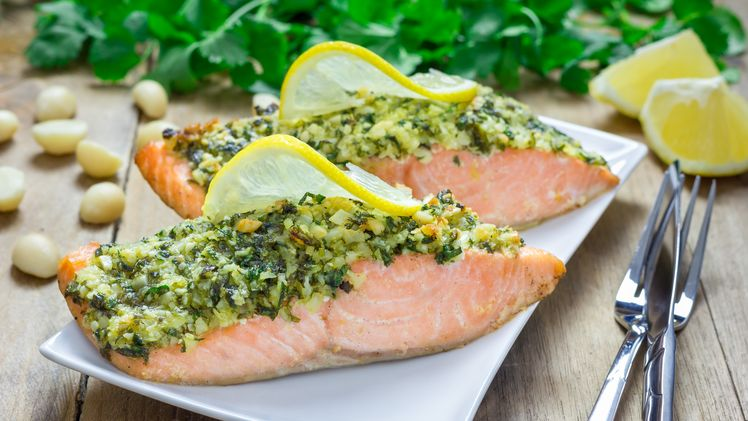

Pečený losos s makadamovo-koriandrovou kôrkou

Rýchla, zdravá a aromatická večera.
INGREDIENCIE
- 2 hrste čerstvý koriander
- 70 g strúhanka
- 70 g nasekané makadamové orechy
- 60 g roztopené maslo
- 1 kg filet lososa
- trochu soľ, mleté čierne korenie
POSTUP
- Čerstvý koriander nasekáme na drobno.
- Koriander zmiešame spolu so strúhankou a nasekanými makadamovými orieškami. Premiešame.
- Zmes prelejeme roztopeným maslom a vymiešame hmotu mrveničkovej konzistencie.
- Filet lososa položíme kožou na dol na plech vystlaný alobalom, zľahka ho posolíme, okoreníme a na vrch navrstvíme pripravenú zmes.
- Lososa vložíme do rúry vyhriatej na 200°C na 15 až 20 minút v závislosti od hrúbky filetu.
- Podávame s varenými zemiakmi, čerstvým šalátom alebo varenou špargľou a mesiačikom citróna.